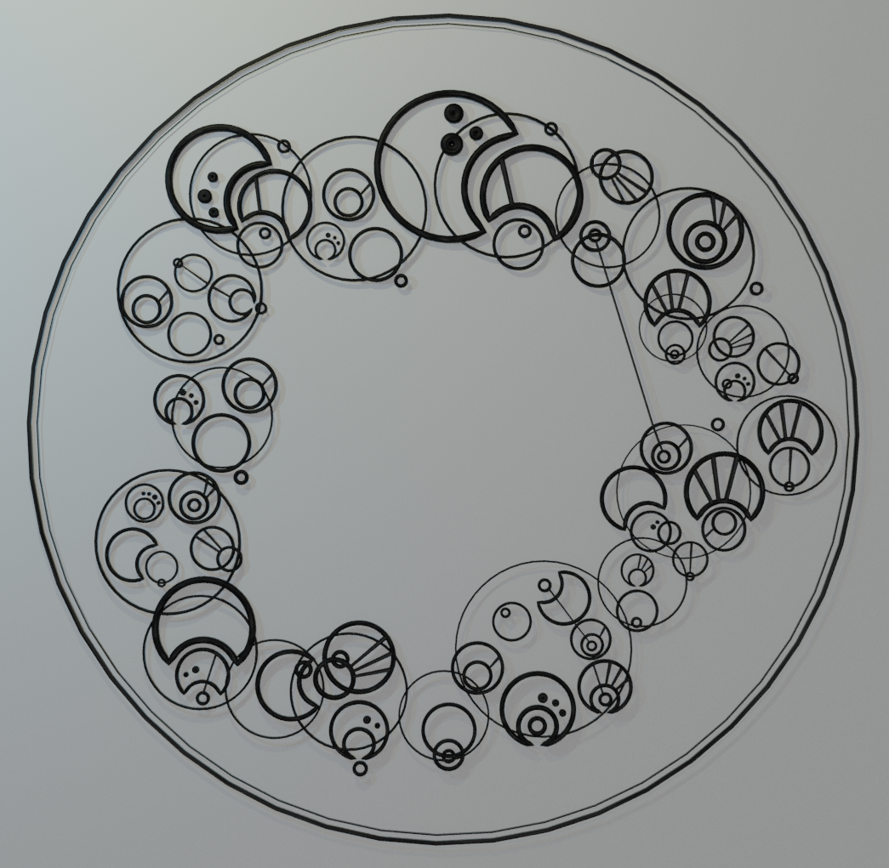
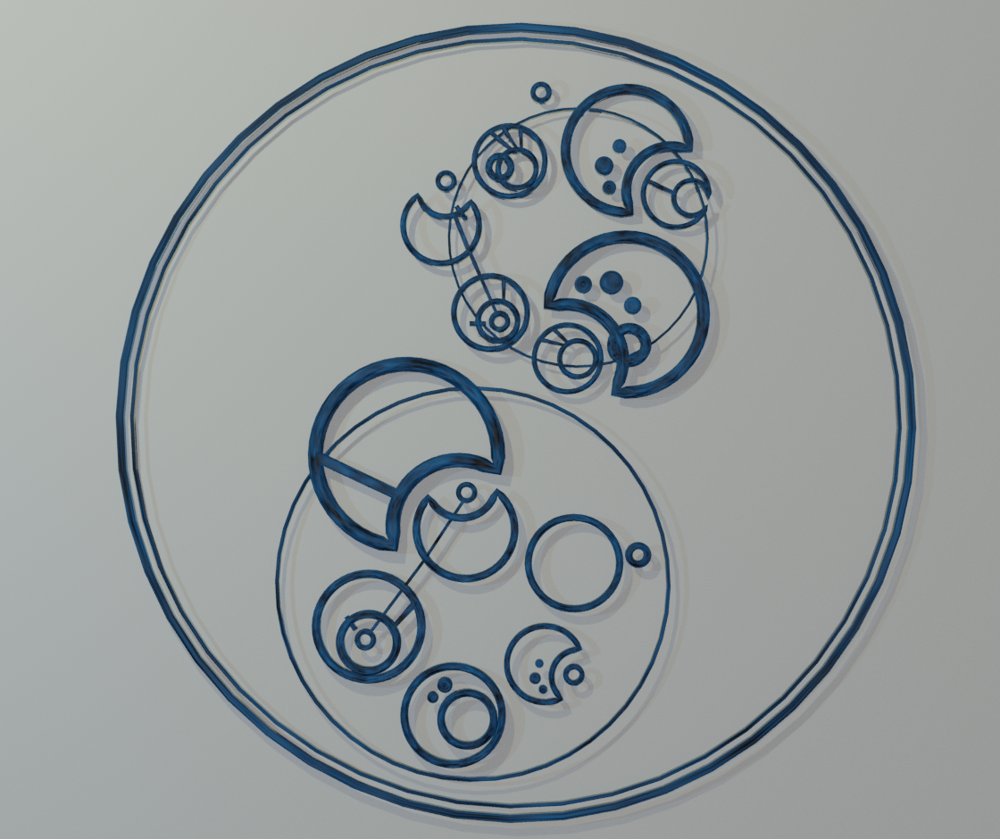
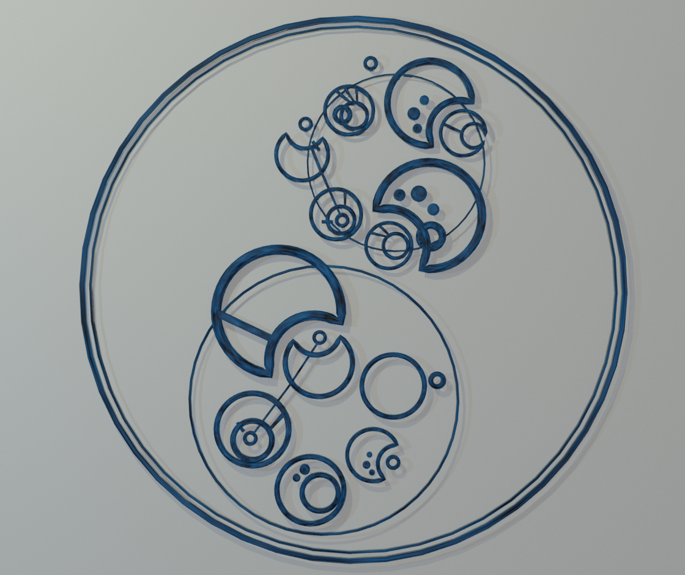

Bára Kyseľová
Vystudovala jsem bakaláře na FITu, obor Počítačová grafika. Teď pokračuji v navazujícím magisterském studiju, obor (bohužel :')) Softwarové inženýrství. ~Ráda používám C++ a Python, baví mě Blender, případně GIMP a Inkscape. Jednou budu doufám políbená i Photoshopem. Ráda si kreslím a píšu zápisky. Často prokrastinuji a hraju LoLko (což se nevylučuje a ani na jedno nejsem pyšná). Prý bývám kreativní a mám představivost, jako studentka a spíše realista tomu často moc nevěřím.
Proč NI-CCC, nápady
Do předmětu jsem nepřišla s žádnými konkrétními nápady, nabízené projekty okolo vizualizace dat apod. mi přišly zajímavé a smyslupné, raději bych ale pokračovala v práci na jednom ze svých projektů (BP konkrétně). Sice naopak relativně nesmyslupným a trošku pitomým, ale celkem vizuálně přitažlivým a snad fakt celkem kreativním.
Gallifreyan
O co jde?
- Fiktivní kruhové písmo
- Původně z britského seriálu Doctor Who.
- V mé BP implementován překladač z latinky do gallifreyan.
- Realizováno jako plugin do Blenderu.
- Poměrně jednoduché generování.
- Pro „pěknější“ výsledky nutná ruční editace (jednoduchá, ale je tam.).
 

Co s tím dále?
- Nemám úplně konkrétní a přesnou představu, takže jsem otevřená všem případným nápadům (ideálně i třeba směrem k DP.).
- Vytvářet hotovější produkt.
- Eliminování práce navíc.
- Kreativnější a „hezčí“ výsledek rovnou.
- Větší provázanost, propojení obrazců, komplexnost.
- Návrat k možnosti vytváření reálného 3D produktu - 3D tisk? (původně byl v plánu v BP) //jiná metoda?
- Pravděpodobně zůstat u Blenderu?
- Expandovat na web?
Kontakt
- Discord: barushe22#8718
- Emaily: bkyselova22@gmail.com, kyselba1@cvut.cz